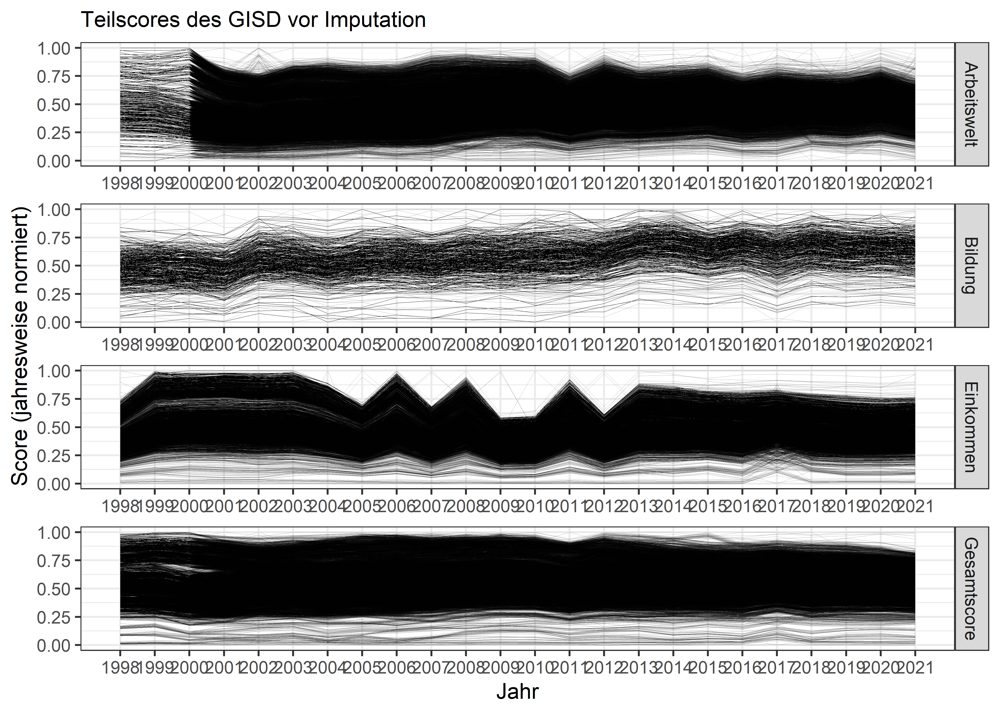
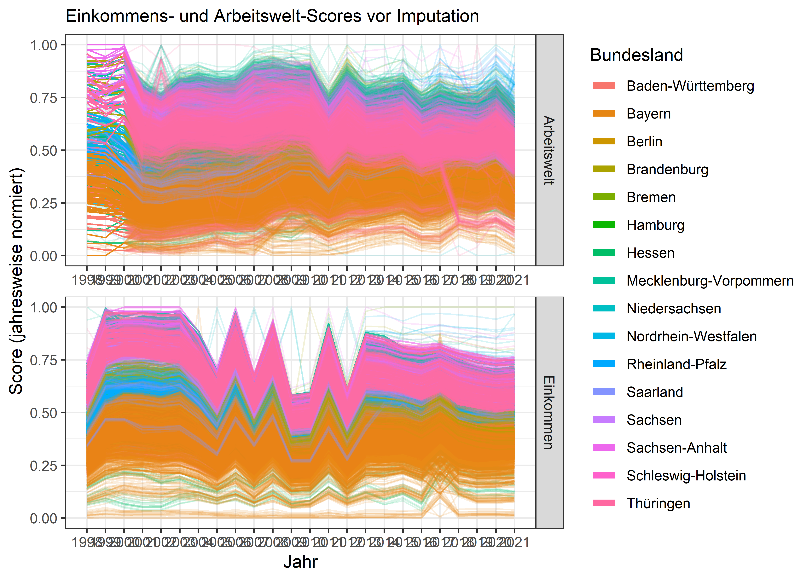
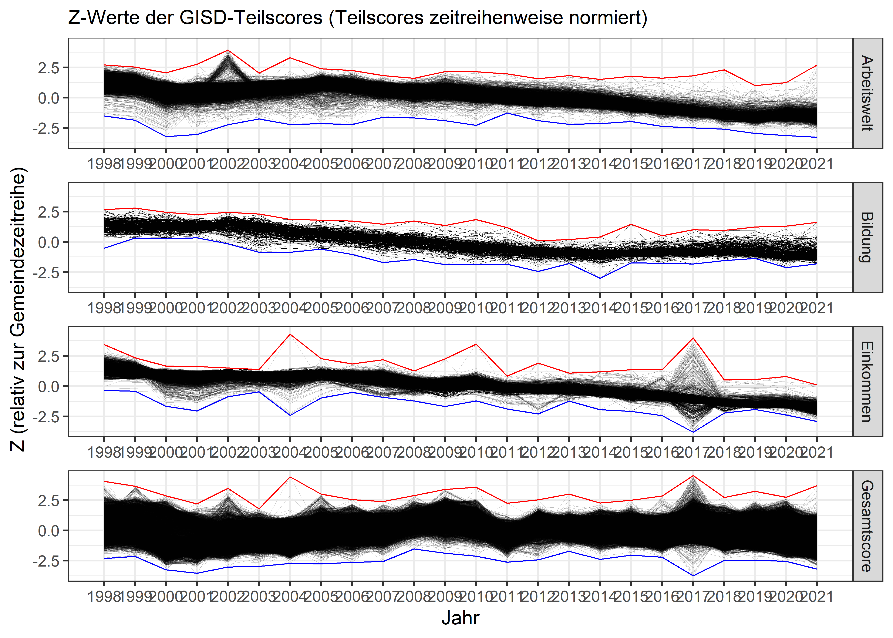
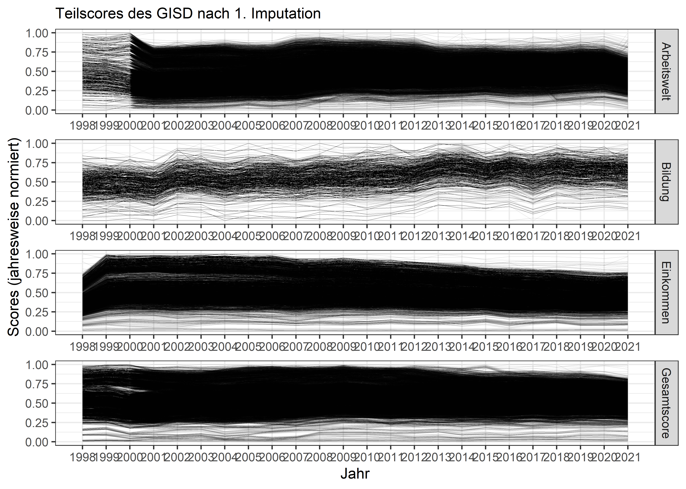
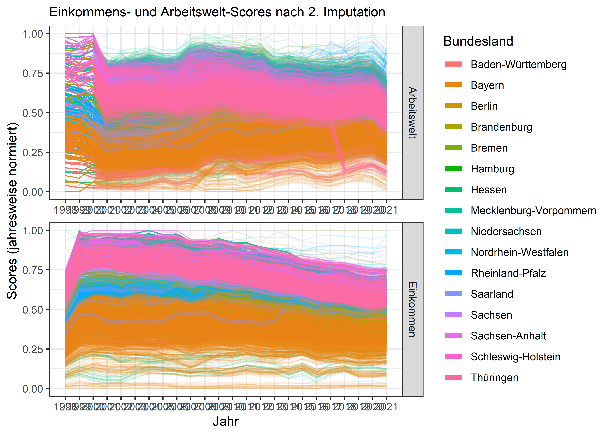

Revision: 2025_v1
Die Teildimensionen Beschäftigung und Einkommen weisen Ausreißer auf, die die Normierung teilweise erheblich verzerren. Zur Identifikation dieser Ausreißer wurden zunächst die Verläufe der Teildimensionen geplottet und visuell begutachtet. Auf dieser Grundlage erfolgte die Selektion der zu imputierenden Ausreißer. Die betroffenen Datenpunkte wurden anschließend mithilfe einer Mittelwertsimputation, basierend auf den Werten des Vor- und Nachjahres, ersetzt. Im Anschluss daran wurde eine erneute Normierung durchgeführt, um die Auswirkungen der Imputation auf die Gesamtergebnisse zu überprüfen. Da manche Gemeinden in zwei aufeinanderfolgenden Jahren Ausreißer zeigten, war in einer zweiten Runde eine weitere Imputation erforderlich. Abschließend erfolgten die finale Normierung sowie eine abschließende Prüfung der Daten. Der folgende Abschnitt legt jeden Schritt noch ein Mal genauer da, als im Hauptskript.
# Pakete laden
library(tidyverse) # Tidyverse Methoden
library(scales) # Skalierungsfunktionen
# Skriptpfad als Arbeitspfad setzen
setwd(dirname(rstudioapi::getSourceEditorContext()$path))
# Neuestes Datenjahr und Revisionsnummer vermerken
latestyear <- 2021
currentrevision <- "2025_v1"
# Datenpfad
dir_gisd <- paste0("../Output/",currentrevision,"/Zwischendaten/")
#Dezimal-Zahlendarstellung erzwingen
options(scipen=999)# Rohe Teilscores für Imputation
Results_raw <- readRDS(paste0(dir_gisd, "Results_raw.rds"))
# Jahresnormierte Teilscores für Inspektion und Selektion
Scores_raw_long <- Results_raw %>%
select(Gemeindekennziffer, Jahr, Bundesland,
Gesamtscore = GISD_Score,
Arbeitswelt = TS_Arbeitswelt_nrm,
Einkommen = TS_Einkommen_nrm,
Bildung = TS_Bildung_nrm) %>%
# Auf long reshapen
pivot_longer(cols = c(Gesamtscore, Arbeitswelt, Einkommen, Bildung),
names_to = "Dimension",
values_to = "Score") %>%
# Gemeinde-Jahr-String für Zuordnung nachher
mutate(gkz_j = paste0(Gemeindekennziffer,"_",as.character(Jahr)))
# Z (relativ zu Gemeindezeitreihe) aufbereiten
Z_ts <- Results_raw %>%
# Datenbasis für Z: zeitreihennormierte Teilscores
group_by(Gemeindekennziffer) %>%
mutate(Arbeitswelt = rescale(TS_Arbeitswelt_raw),
Bildung = rescale(TS_Bildung_raw),
Einkommen = rescale(TS_Einkommen_raw),
Gesamtscore = rescale(GISD_Score)) %>%
# Auf long reshapen
pivot_longer(cols = c(Arbeitswelt, Bildung, Einkommen, Gesamtscore),
names_to = "Dimension",
values_to = "Score") %>%
# Z berechnen
group_by(Gemeindekennziffer, Dimension) %>%
mutate(z = (Score - mean(Score)) / sd(Score)) %>%
ungroup() %>%
select(Gemeindekennziffer, Jahr,
Dimension, z)
# Z an den long Datensatz joinen
Scores_raw_long <- Scores_raw_long %>%
left_join(Z_ts, by = c("Gemeindekennziffer", "Jahr", "Dimension"))
rm(Z_ts)# Plotübergreifende Komponente
plot_components <- list(scale_x_continuous(breaks = seq(1998, 2021, by = 1),
minor_breaks = NULL),
facet_wrap(~ Dimension, ncol = 1,
strip.position = "right",
scales = "free_x"),
guides(color=guide_legend(override.aes=list(alpha=1, linewidth=2))),
theme_bw())
################################################################################
# Erste Übersicht: Teilscores (jahresweise normiert)
ggplot(Scores_raw_long,
aes(x = Jahr,
y = Score,
group = Gemeindekennziffer)) +
geom_line(alpha = 0.3, linewidth = 0.1) +
labs(subtitle = "Teilscores des GISD vor Imputation",
y = "Score (jahresweise normiert)") +
plot_components
# ggsave("Plots/Scores.png", device = "png",
# width = 210, height = 297, units = "mm")
# Genauerer Blick auf Arbeitswelt und Einkommen
ggplot(filter(Scores_raw_long, Dimension == c("Einkommen", "Arbeitswelt")),
aes(x = Jahr,
y = Score,
group = Gemeindekennziffer,
color = Bundesland)) +
geom_line(alpha = 0.15, linewidth = 0.5) +
labs(subtitle = "Einkommens- und Arbeitswelt-Scores vor Imputation",
y = "Score (jahresweise normiert)") +
plot_components
# ggsave("Plots/AE-Scores.png", device = "png",
# width = 297, height = 210, units = "mm")
################################################################################
# Z-Tabelle generieren (jahresweise normiert)
z_table <- Scores_raw_long %>%
group_by(Jahr, Dimension) %>%
summarize(zMin = min(z, na.rm = TRUE),
zMax = max(z, na.rm = TRUE)) %>%
select(Jahr, Dimension, zMin, zMax)
# Z-Scores plotten (jahresweise normiert)
ggplot(data = Scores_raw_long, aes(x = Jahr)) +
geom_line(data = Scores_raw_long, aes(y=z, group = Gemeindekennziffer), linewidth = 0.1, alpha = 0.3) +
geom_line(data = z_table, aes(y=zMin), linewidth = 0.3, color = "blue") +
geom_line(data = z_table, aes(y=zMax), linewidth = 0.3, color = "red") +
labs(subtitle = "Z-Werte der GISD-Teilscores (Teilscores zeitreihenweise normiert)",
y = "Z (relativ zur Gemeindezeitreihe)") +
plot_components
# ggsave("Plots/Z_ynrm.png", device = "png",
# width = 210, height = 297, units = "mm")
################################################################################
# Einkommens- und Arbeitswelt-Scores vereinzelt pro Bundesland
bundeslaender = sort(unique(Results_raw$Bundesland))
bl_colors <- scales::hue_pal()(16) # Aus Regenbogen 16 Farben ziehen
i <- 1 # Farb-Iterator
for(bl in bundeslaender) {
# Absolutzahlen (jahresweise normiert)
ggplot() +
# Deutschland in grau
geom_line(data = Scores_raw_long %>% filter(Dimension == c("Einkommen", "Arbeitswelt"),
Bundesland != bl),
alpha = 0.1, linewidth = 0.3, color = "grey80",
aes(x = Jahr,
y = Score,
group = Gemeindekennziffer)) +
# Ziel-Bundesland in Farbe
geom_line(data = Scores_raw_long %>% filter(Dimension == c("Einkommen", "Arbeitswelt"),
Bundesland == bl), # Bundesland durchwechseln
alpha = 0.5, linewidth = 0.5, color = paste0(bl_colors[i]), # Farbe durchwechseln
aes(x = Jahr,
y = Score,
group = Gemeindekennziffer)) +
labs(subtitle = paste0("Einkommens- und Arbeitswelt-Scores vor Imputation (Bundesland: ", bl, ")"),
y = "Score (jahresweise normiert)") +
ylim(0, 1) +
plot_components
# #Plot speichern
# ggsave(paste0("Plots/Bundeslaender/Teilscores_",bl,".png"), device = "png",
# width = 297, height = 210, units = "mm")
# Z-Werte (zeitreihenweise normiert) (bessere Lesbarkeit als jahresnormiert)
ggplot(data = Scores_raw_long %>% filter(Dimension == c("Einkommen", "Arbeitswelt"),
Bundesland == bl),
aes(x = Jahr,
y = z,
group = Gemeindekennziffer)) +
geom_line(alpha = 0.3, linewidth = 0.5,
color = paste0(bl_colors[i])) +
labs(subtitle = paste0("Z-Werte der zeitreihennormierten Teilscores vor Imputation (Bundesland: ", bl, ")"),
y = "Z (relativ zur Gemeindezeitreihe)") +
plot_components
# #Plot speichern
# ggsave(paste0("Plots/Bundeslaender/Z/Z_",bl,".png"), device = "png",
# width = 297, height = 210, units = "mm")
# Nächste Farbe
i <- i + 1
}Es sind nur Einkommen und Arbeitswelt von Ausreißern betroffen, daher fällt die Bildungsdimension raus.
## Arbeitswelt
# Optische Begutachtung zeigte folgende Ausreißer auf:
# - Baden-Württemberg in 2002
# - Mecklenburg-Vorpommern in 2002, 2003, 2011, 2013-2016
# - Niedersachsen 2002, 2004
# - Rheinland-Pfalz in 2017 sowie Anomalien in 2002
# - Sachsen in 2013, 2014
# - Sachsen-Anhalt in 2013
# - Schleswig-Holstein in 2002, 2018
# - Thüringen in 2002, 2005, 2006, 2012, 2018, 2019
aus.arb.bw <- Scores_raw_long %>%
filter(Dimension == "Arbeitswelt",
Bundesland == "Baden-Württemberg",
(Jahr == 2002 & Score > 0.5))
aus.arb.mv <- Scores_raw_long %>%
filter(Dimension == "Arbeitswelt",
Bundesland == "Mecklenburg-Vorpommern",
(Jahr == 2002 & Score > 0.85) |
(Jahr %in% c(2011, 2013, 2015, 2016) & Score > 0.95))
aus.arb.ni <- Scores_raw_long %>%
filter(Dimension == "Arbeitswelt",
Bundesland == "Niedersachsen",
(Jahr %in% c(2002, 2004) & (z > 2 | z < -1)))
aus.arb.nw <- Scores_raw_long %>%
filter(Dimension == "Arbeitswelt",
Bundesland == "Nordrhein-Westfalen",
(Jahr == 2016 & z < -1.5))
aus.arb.rp <- Scores_raw_long %>%
filter(Dimension == "Arbeitswelt",
Bundesland == "Rheinland-Pfalz",
(Jahr == 2002 & z > 2) |
(Jahr == 2017 & Score > 0.95))
aus.arb.sn <- Scores_raw_long %>%
filter(Dimension == "Arbeitswelt",
Bundesland == "Sachsen",
(Jahr == 2013 & z > 1))
aus.arb.st <- Scores_raw_long %>%
filter(Dimension == "Arbeitswelt",
Bundesland == "Sachsen-Anhalt",
(Jahr == 2013 & z > 1) |
(Jahr == 2015 & Score > 0.95))
aus.arb.sh <- Scores_raw_long %>%
filter(Dimension == "Arbeitswelt",
Bundesland == "Schleswig-Holstein",
(Jahr == 2002 & z > 2) |
(Jahr == 2018 & Score > 0.9))
aus.arb.th <- Scores_raw_long %>%
filter(Dimension == "Arbeitswelt",
Bundesland == "Thüringen",
(Jahr == 2002 & z >= 2) |
(Jahr == 2005 & z < 0) |
(Jahr == 2018 & Score < 0.1) |
(Jahr == 2019 & z > 0))
ausreisser_a <- bind_rows(aus.arb.bw,
aus.arb.mv,
aus.arb.ni,
aus.arb.nw,
aus.arb.rp,
aus.arb.sn,
aus.arb.st,
aus.arb.sh,
aus.arb.th)
## Einkommen
# Optische Begutachtung zeigte folgende Ausreißer auf:
# - Baden-Württemberg in 2001, 2004, 2015 (sowie 2016 und 2017 aber nicht stark)
# - Bayern in 2004, 2012, sowie starke Anomalien in 2017
# - Brandenburg in 2010
# - Niedersachsen in 2005, 2007, 2009, 2012
# - Nordrhein-Westfalen in 2004, 2011, 2017 (aber nicht stark)
aus.eink.bw <- Scores_raw_long %>%
filter(Dimension == "Einkommen",
Bundesland == "Baden-Württemberg",
(Jahr == 2004 & z < -1) |
(Jahr == 2015 & (z < -1.5 | z > 0.8)) |
(Jahr == 2016 & Score < 0.2))
aus.eink.by <- Scores_raw_long %>%
filter(Dimension == "Einkommen",
Bundesland == "Bayern",
(Jahr == 2004 & (z < -1 | z > 4)) |
(Jahr == 2012 & (z < -1)) |
(Jahr == 2017))
aus.eink.bb <- Scores_raw_long %>%
filter(Dimension == "Einkommen",
Bundesland == "Brandenburg",
z > 2)
aus.eink.ni <- Scores_raw_long %>%
filter(Dimension == "Einkommen",
Bundesland == "Niedersachsen",
Jahr %in% c(2005, 2007, 2009, 2012),
Score > 0.75)
aus.eink.nw <- Scores_raw_long %>%
filter(Dimension == "Einkommen",
Bundesland == "Nordrhein-Westfalen",
(Jahr == 2004 & z <= -2) |
(Jahr == 2011 & z <= -1) |
(Jahr <= 2017 & z <= -1.5))
ausreisser_e <- bind_rows(aus.eink.bw,
aus.eink.by,
aus.eink.bb,
aus.eink.ni,
aus.eink.nw)
rm(aus.arb.bw,
aus.arb.mv,
aus.arb.ni,
aus.arb.nw,
aus.arb.rp,
aus.arb.sn,
aus.arb.st,
aus.arb.sh,
aus.arb.th,
aus.eink.bw,
aus.eink.by,
aus.eink.bb,
aus.eink.ni,
aus.eink.nw)# Erste Runde Imputation
Results_imp1 <- Results_raw %>%
# Gemeinde-Jahr-String für Zuordnung
mutate(gkz_j = paste0(Gemeindekennziffer,"_",as.character(Jahr))) %>%
# Interpolieren (Reminder: Es geht um die rohen Scores)
group_by(Gemeindekennziffer) %>%
mutate(TS_Arbeitswelt_imp1 = if_else(gkz_j %in% ausreisser_a$gkz_j,
(lag(TS_Arbeitswelt_raw) + lead(TS_Arbeitswelt_raw)) / 2,
TS_Arbeitswelt_raw),
TS_Einkommen_imp1 = if_else(gkz_j %in% ausreisser_e$gkz_j,
(lag(TS_Einkommen_raw) + lead(TS_Einkommen_raw)) / 2,
TS_Einkommen_raw),
Imputed = if_else(gkz_j %in% c(ausreisser_e$gkz_j, ausreisser_a$gkz_j),
1,
0)) %>%
ungroup() %>%
# Neu imputierte Teilscores jahresweise normieren
group_by(Jahr) %>%
mutate(TS_Arbeitswelt_nrm = rescale(TS_Arbeitswelt_imp1),
TS_Einkommen_nrm = rescale(TS_Einkommen_imp1),
# Zu Gesamtscore zusammensetzen und erneut normieren
GISD_Score = rescale(TS_Arbeitswelt_nrm + TS_Einkommen_nrm + TS_Bildung_nrm)) %>%
ungroup()
# Jahresnormierte Teilscores für Inspektion und Selektion
Scores_imp1_long <- Results_imp1 %>%
select(Gemeindekennziffer, Jahr, Bundesland,
Gesamtscore = GISD_Score,
Arbeitswelt = TS_Arbeitswelt_nrm,
Einkommen = TS_Einkommen_nrm,
Bildung = TS_Bildung_nrm,
contains("TS_"),
gkz_j) %>%
# Auf long reshapen
pivot_longer(cols = c(Gesamtscore, Arbeitswelt, Einkommen, Bildung),
names_to = "Dimension",
values_to = "Score")
# Z (relativ zu Gemeindezeitreihe) aufbereiten
Z_ts <- Results_imp1 %>%
group_by(Gemeindekennziffer) %>%
mutate(Arbeitswelt = rescale(TS_Arbeitswelt_imp1),
Einkommen = rescale(TS_Einkommen_imp1)) %>%
# Auf long reshapen
pivot_longer(cols = c(Arbeitswelt, Einkommen),
names_to = "Dimension",
values_to = "Score") %>%
# Z berechnen
group_by(Gemeindekennziffer, Dimension) %>%
mutate(z = (Score - mean(Score)) / sd(Score)) %>%
ungroup() %>%
select(Gemeindekennziffer, Jahr,
Dimension, z)
# Z an den long Datensatz joinen
Scores_imp1_long <- Scores_imp1_long %>%
left_join(Z_ts, by = c("Gemeindekennziffer", "Jahr", "Dimension"))
rm(Z_ts)# Teilscores (jahresweise normiert)
ggplot(Scores_imp1_long,
aes(x = Jahr,
y = Score,
group = Gemeindekennziffer)) +
geom_line(alpha = 0.3, linewidth = 0.1) +
labs(subtitle = "Teilscores des GISD nach 1. Imputation",
y = "Scores (jahresweise normiert)") +
plot_components
# ggsave("Plots/Scores_imp1.png", device = "png",
# width = 210, height = 297, units = "mm")
# Genauerer Blick auf Arbeitswelt und Einkommen
ggplot(Scores_imp1_long %>% filter(Dimension == c("Einkommen",
"Arbeitswelt")),
aes(x = Jahr,
y = Score,
group = Gemeindekennziffer,
color = Bundesland)) +
geom_line(alpha = 0.15, linewidth = 0.5) +
labs(subtitle = "Einkommens- und Arbeitswelt-Scores nach 1. Imputation",
y = "Scores (jahresweise normiert)") +
plot_components # ggsave("Plots/AE-Scores_imp1.png", device = "png",
# width = 297, height = 210, units = "mm")
################################################################################
# Einkommens- und Arbeitswelt-Scores pro Bundesland (zeitreihenweise normiert)
i <- 1
for(bl in bundeslaender) {
# Absolutzahlen (jahresweise normiert)
ggplot() +
# Deutschland in grau
geom_line(data = Scores_imp1_long %>% filter(Dimension == c("Einkommen", "Arbeitswelt"),
Bundesland != bl),
alpha = 0.1, linewidth = 0.3, color = "grey80",
aes(x = Jahr,
y = Score,
group = Gemeindekennziffer)) +
# Ziel-Bundesland in Farbe
geom_line(data = Scores_imp1_long %>% filter(Dimension == c("Einkommen", "Arbeitswelt"),
Bundesland == bl), # Bundesland durchwechseln
alpha = 0.5, linewidth = 0.5, color = paste0(bl_colors[i]), # Farbe durchwechseln
aes(x = Jahr,
y = Score,
group = Gemeindekennziffer)) +
labs(subtitle = paste0("Einkommens- und Arbeitswelt-Scores nach 1. Imputation (Bundesland: ", bl, ")"),
y = "Score (jahresweise normiert)") +
ylim(0, 1) +
plot_components
# #Plot speichern
# ggsave(paste0("Plots/Bundeslaender/Teilscores_",bl,"_imp1.png"), device = "png",
# width = 297, height = 210, units = "mm")
# Z-Werte (zeitreihenweise normiert)
ggplot(data = Scores_imp1_long %>% filter(Dimension == c("Einkommen", "Arbeitswelt"),
Bundesland == bl),
aes(x = Jahr,
y = z,
group = Gemeindekennziffer)) +
geom_line(alpha = 0.3, linewidth = 0.5,
color = paste0(bl_colors[i])) +
labs(subtitle = paste0("Z-Werte der zeitreihennormierten Teilscores nach 1. Imputation (Bundesland: ", bl, ")"),
y = "Z (relativ zur Gemeindezeitreihe)") +
plot_components
# #Plot speichern
# ggsave(paste0("Plots/Bundeslaender/Z/Z_",bl,"_imp1.png"), device = "png",
# width = 297, height = 210, units = "mm")
# Nächste Farbe
i <- i + 1
}## Arbeitswelt
aus.arb.bw <- Scores_imp1_long %>%
filter(Dimension == "Arbeitswelt",
Bundesland == "Baden-Württemberg",
(Jahr == 2007 & z < -1))
aus.arb.mv <- Scores_imp1_long %>%
filter(Dimension == "Arbeitswelt",
Bundesland == "Mecklenburg-Vorpommern",
(Jahr == 2014 & Score > 0.95))
aus.arb.sn <- Scores_imp1_long %>%
filter(Dimension == "Arbeitswelt",
Bundesland == "Sachsen",
(Jahr == 2014 & Score > 0.9))
aus.arb.th <- Scores_imp1_long %>%
filter(Dimension == "Arbeitswelt",
Bundesland == "Thüringen",
(Jahr == 2006 & Score < 0.25))
# Bundesländer zusammenlegen
ausreisser_a_imp1 <- bind_rows(aus.arb.bw,
aus.arb.mv,
aus.arb.sn,
aus.arb.th)
## Einkommen
ausreisser_e_imp1 <- Scores_imp1_long %>%
filter(Dimension == "Einkommen",
Bundesland == "Baden-Württemberg",
(Jahr == 2015 & z > -0.2) |
(Jahr == 2017 & Score < 0.2)) %>%
# Gemeinde-Jahr-String für Zuordnung erstellen
mutate(gkz_j = paste0(Gemeindekennziffer,"_",as.character(Jahr)))
rm(aus.arb.bw,
aus.arb.mv,
aus.arb.sn,
aus.arb.th)Results_imp2 <- Results_imp1 %>%
# Interpolieren
group_by(Gemeindekennziffer) %>%
mutate(TS_Arbeitswelt_imp2 = if_else(gkz_j %in% ausreisser_a_imp1$gkz_j,
(lag(TS_Arbeitswelt_imp1) + lead(TS_Arbeitswelt_imp1)) / 2,
TS_Arbeitswelt_imp1),
TS_Einkommen_imp2 = if_else(gkz_j %in% ausreisser_e_imp1$gkz_j,
(lag(TS_Einkommen_imp1) + lead(TS_Einkommen_imp1)) / 2,
TS_Einkommen_imp1),
Imputed = if_else(gkz_j %in% c(ausreisser_e_imp1$gkz_j, ausreisser_a_imp1$gkz_j),
2,
Imputed)) %>%
ungroup() %>%
# Teilscores jahresweise normieren
group_by(Jahr) %>%
mutate(TS_Arbeitswelt_nrm = rescale(TS_Arbeitswelt_imp2),
TS_Einkommen_nrm = rescale(TS_Einkommen_imp2),
# Zu Gesamtscore zusammensetzen und erneut normieren
GISD_Score = rescale(TS_Arbeitswelt_nrm + TS_Einkommen_nrm + TS_Bildung_nrm)) %>%
ungroup()
Scores_imp2_long <- Results_imp2 %>%
select(Gemeindekennziffer, Jahr, Bundesland,
Gesamtscore = GISD_Score,
Arbeitswelt = TS_Arbeitswelt_nrm,
Einkommen = TS_Einkommen_nrm,
Bildung = TS_Bildung_nrm,
contains("TS_"),
gkz_j) %>%
# Auf long reshapen
pivot_longer(cols = c(Gesamtscore, Arbeitswelt, Einkommen, Bildung),
names_to = "Dimension",
values_to = "Score")# Teilscores (jahresweise normiert)
ggplot(Scores_imp2_long,
aes(x = Jahr,
y = Score,
group = Gemeindekennziffer)) +
geom_line(alpha = 0.3, linewidth = 0.1) +
labs(subtitle = "Teilscores des GISD nach 2. Imputation",
y = "Scores (jahresweise normiert)") +
plot_components # ggsave("Plots/Scores_imp2.png", device = "png",
# width = 210, height = 297, units = "mm")
# Genauerer Blick auf Arbeitswelt und Einkommen
ggplot(Scores_imp2_long %>% filter(Dimension == c("Einkommen",
"Arbeitswelt")),
aes(x = Jahr,
y = Score,
group = Gemeindekennziffer,
color = Bundesland)) +
geom_line(alpha = 0.15, linewidth = 0.5) +
labs(subtitle = "Einkommens- und Arbeitswelt-Scores nach 2. Imputation",
y = "Scores (jahresweise normiert)") +
plot_components
# ggsave("Plots/AE-Scores_imp2.png", device = "png",
# width = 297, height = 210, units = "mm")
################################################################################
# Einkommens- und Arbeitswelt-Scores pro Bundesland (zeitreihenweise normiert)
i <- 1
for(bl in bundeslaender) {
# Absolutzahlen (jahresweise normiert)
ggplot() +
# Deutschland in grau
geom_line(data = Scores_imp2_long %>% filter(Dimension == c("Einkommen", "Arbeitswelt"),
Bundesland != bl),
alpha = 0.1, linewidth = 0.3, color = "grey80",
aes(x = Jahr,
y = Score,
group = Gemeindekennziffer)) +
# Ziel-Bundesland in Farbe
geom_line(data = Scores_imp2_long %>% filter(Dimension == c("Einkommen", "Arbeitswelt"),
Bundesland == bl), # Bundesland durchwechseln
alpha = 0.5, linewidth = 0.5, color = paste0(bl_colors[i]), # Farbe durchwechseln
aes(x = Jahr,
y = Score,
group = Gemeindekennziffer)) +
labs(subtitle = paste0("Einkommens- und Arbeitswelt-Scores nach 2. Imputation (Bundesland: ", bl, ")"),
y = "Score (jahresweise normiert)") +
ylim(0, 1) +
plot_components
# #Plot speichern
# ggsave(paste0("Plots/Bundeslaender/Teilscores_",bl,"_imp2.png"), device = "png",
# width = 297, height = 210, units = "mm")
# Nächste Farbe
i <- i + 1
}